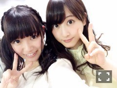
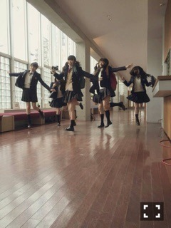

| 2015/04 17 Fri | ひめたん-OoO-その535 |
きゃー書きたいことがいっぱいある！
 お誕生日
お誕生日
まず、前回は
お誕生日おめでとうコメント
たくさんありがとうございました♡
お誕生日がまさかの
アンダーライブ前日ということで
責任感みたいなものを
ヒシヒシと感じた
貴重なお誕生日でした。笑
そして、
日記のコメントを読んでいると
私はみなさんからの大きな
支えがあったから
今日この日を迎えたんだなぁと。
お誕生日が来るのなんて
小さい頃は当たり前だったけれど
みなさんとの出会いがあったから
とても充実した1年間だったんだなって
思うと感謝せずにはいられません！
乃木坂にいなければ
果たすことのなかったかもしれない
みなさんとの出会い
今はひとりひとりが
私にとって大切な存在であり、
私もみなさんにとって
なくてはならない存在になりたい。
これからはじまる1年も
感謝の気持ちを忘れず
一期一会を大切にしていきたいです。
そして、この1年でさらに
いろーんな私を知ってもらえるよう
もっともっと頑張ります（ ˆoˆ ）
これからもよろしくね......ふふ♡

あ、若月のままさんと
同じお誕生日なんだけどね
ままさんからなんと
お誕生日プレゼントが
届きました(´,,•ω•,,｀)♡♡
ままさ～んらぶ♡
ままさんもお誕生日おめでとう♡
なんと前回の日記に
コメントもくださってました♡
11th個別握手会
日曜日の握手会は
本当にたくさんの方に来ていただいて
久々にお話できた～（＾ω＾）
会いに来てくださったみなさん
ありがとう♡
関東での握手会は久々だったので
ずっと楽しみにしてました！
ひめのお誕生日だから頑張って
遠征してくれた人もいました！
この日は生誕祭していただきました！
生誕委員のみなさん
一緒にお祝いしてくださったみなさん
ありがとうございました(＊ˆoˆ＊)
メンバーもたくさん
遊びに来てくれて
にぎやかなお誕生日♡
お手紙はいくちゃんが読んでくれたよ！

 玲奈さん
玲奈さん
短い間でしたが、玲奈さんからは
本当にたくさんのことを
教えていただきました（＾ω＾）
まだまだ側で、眩しい背中を
いつまでも見ていたいくらい。
乃木坂兼任解除になっても
ずっと尊敬する先輩であり、
お姉さんみたいな存在です♡
ありがとうございました！！

EX大衆
4/15発売のEX大衆
みなさんもうチェックしてくれたかな？
ソログラビア撮っていただきました！
衣装3着も着ました♡
全部かわいい♡
ヘアは冒険していて、
また違った表情を
見ていただけるかなと。
ヤンジャン
約束していた
ヤンジャンオフショット

素敵なオフショットいっぱいあるから
ちょっとずつ出してこうと思うけど
この写メの臨場感ったらないよね☆
らじらー！サンデー
次回4/19の
らじらー！サンデー
ゲストは寿美菜子さん、
そして乃木坂から生田絵梨花ちゃんが
来てくれます\( ˆoˆ )/
「めざせ！センター！」のコーナー
期待していてほしいな～
前回もそうでしたが
らじらー！スタッフさんは
いつも本気です。素敵すぎる。♡
今回はいくちゃんならではの企画、
らじらーでしか聴けない
特別な企画だと思いますよ～♪
アンダーライブ
4公演終わって折り返し地点であり、
11thアンダーメンバーの活動も
そろそろ終わりに近づいてる気がして
いろんなことを肌で感じています
身体は常に緊張感に支配されてて
でもそれが決して苦ではなくて。
舞台に立てることに感謝して
メンバーひとりひとりに寄り添って
幕が下りる最後の最後まで
理想のセンター像を追い続けたい。
よし、最後まで駆け抜けよう！
(＊´・ω・＊)
コメント(1015)
2015/04/17 23:48